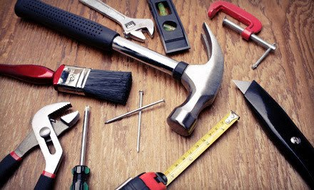
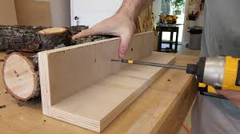
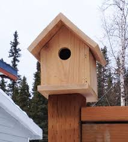

Birdhouses
Materials
Purchase untreated wood that is 1 by 8 inches (2.5 cm × 20.3 cm) by 8 feet (240 cm) long, then buy a box of galvanized screws and purchase C-clamps from a hardware store.

Measurements
You will need to cut the 1x8 inch of wood into different part. using a bandsaw, cut the 1x2 inch piece of wood into two pieces that 4 by 2.5 inches( sidewalls), one 5 by 3.25 inches (floor),one 4.7 by 7 inches (Right roof), one 5.5 by 7 inches (left roof), Two pieces that are 5 by 8 inches (front and back walls) and the final prepatory thing is on on of the 5 by 8 inch pieces you will need to drill a 1'-3' inch hole for the entrance.

Assembling
You will want to start off with a good paint/stain on the wood. followed by adding wood glue to the edes of the birdhouse walls, after the paint drys. use the c-clamps to hold the birdhouse in place untill the wood glue dryes. Then attach the floor and roof pieces with screws.

"
Brayden
Hancock Highschool
Exploring Computer Science Pilot Couse,3rd Block
May, 2018
https://bkillough.github.io/instructional_website.html/